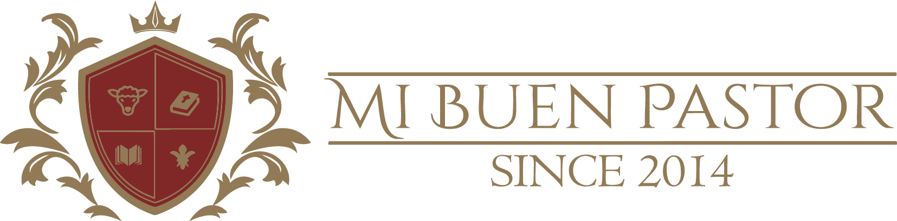
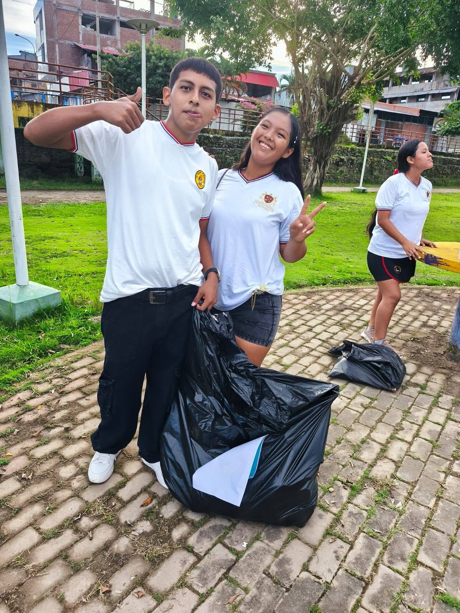

Educando con amor y feEn secundaria formamos jóvenes críticos y responsables, preparados para los estudios superiores y para servir a la sociedad con valores y compromiso cristiano.
Acompañamos a cada adolescente en esta etapa de crecimiento personal con acompañamiento académico, orientación vocacional y espacios de participación, para que descubran su vocación y aterricen sus proyectos de vida.

Lectura profunda, escritura académica y comunicación eficaz en todas las áreas.
Argumentación, análisis y toma de decisiones basadas en datos y valores.
Laboratorios, proyectos y herramientas digitales para entender el mundo.
Ciudadanía activa, respeto por los demás y compromiso con la comunidad.
Acompañamos la elección de estudios superiores y la construcción del proyecto de vida.
Jóvenes que lideran sirviendo, con fe firme y ejemplo de vida cristiana.
Escríbenos y conoce la propuesta para adolescentes de 12 a 17 años.